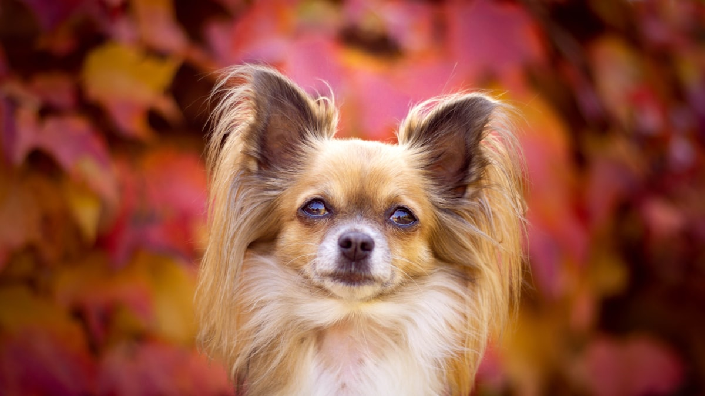

파피용 키우기 완벽 가이드 — 성격·지능·수명·질병 관리

나비처럼 활짝 펼쳐진 귀가 트레이드마크인 파피용은 "작은 몸, 큰 두뇌"의 품종입니다. 소형견 중 지능 최상위권이라 훈련이 잘 되고, 활발하면서도 우아한 매력이 있어요. 성격부터 질병, 관리까지 한 번에 정리했습니다.
한눈에 보는 파피용
| 크기 | 소형견 (체중 약 2.5~5kg) |
|---|---|
| 수명 | 약 13~16년 (소형견 중 장수 편) |
| 털빠짐 | 중간 (속털 적음, 주 2~3회 빗질) |
| 활동량 | 중상 (몸도 머리도 부지런히 써야 함) |
| 지능 | 소형견 최상위권 |
| 초보자 적합도 | 높음 (놀이·훈련 시간을 낼 수 있다면) |
성격과 기질
파피용은 명랑하고 호기심이 많으며, 배우는 것 자체를 즐기는 품종입니다. 어질리티(장애물 경기) 대회에서 소형견 대표로 자주 등장할 만큼 운동 신경과 집중력이 좋아요. 배변훈련이나 트릭 교육도 빠르게 습득합니다.
반대로 말하면 심심한 걸 못 견딥니다. 놀이·산책·노즈워크 같은 자극이 부족하면 짖음이나 파괴 행동으로 이어질 수 있으니, 하루 중 아이와 놀아줄 시간을 확보해 주세요. 경계심이 있는 편이라 낯선 소리에 짖을 수 있는데, 어릴 때 사회화로 크게 줄일 수 있습니다.
훈련·사회화 포인트
파피용에게 훈련은 일이 아니라 놀이에 더 가깝습니다. 새로운 걸 배울 때 눈빛이 달라지는 타입이라, "앉아"만 계속 반복시키면 오히려 금방 시들해져요. 발 터치, 제자리에서 한 바퀴 돌기, 이름을 지정한 장난감 가져오기처럼 조금씩 난도를 올리는 과제를 섞어주면 집중이 훨씬 오래 갑니다. 어질리티나 도그 스포츠 수업이 이 품종에 잘 맞는 이유이기도 합니다.
가장 손이 많이 가는 항목은 짖음입니다. 몸집은 작아도 청각이 예민해서 복도 발소리나 엘리베이터 소리에 먼저 반응해요. 이때 이름을 부르거나 안아 올리면, 파피용은 그 관심을 보상으로 해석합니다. 짖음이 멎은 바로 그 순간에 조용히 간식을 주는 쪽으로 바꾸면 훨씬 빨리 정리됩니다. 어릴 때부터 초인종·현관문 소리를 작은 볼륨으로 들려주며 간식과 연결해 두는 것도 효과가 좋습니다. (짖음 교정 방법)
사회화에서 놓치기 쉬운 점은 오히려 겁이 없다는 것입니다. 3kg 남짓한 몸으로 대형견에게 당당하게 다가가는 일이 흔한데, 상대가 장난삼아 툭 건드리기만 해도 크게 다칠 수 있습니다. 다른 개와의 첫 만남은 비슷한 체구의 상대부터, 보호자가 리드를 짧게 잡은 상태에서 시작하세요.
주의해야 할 질병
- 슬개골 탈구 — 소형견 공통 약점. 미끄럼방지 매트와 점프 차단이 핵심입니다. (슬개골 탈구 대처법)
- 진행성 망막 위축(PRA) — 유전성 안과 질환. 분양 시 부모견 검사 이력을 확인하면 좋습니다.
- 치주 질환 — 턱이 작은 소형견 공통. 어릴 때부터 양치 습관을 들여주세요.
- 골절 주의 — 뼈가 가는 편이라 높은 곳에서의 낙하, 뛰어내리기를 조심해야 합니다.
나이대별 관리 포인트
| 시기 | 이 시기의 핵심 | 놓치기 쉬운 신호 |
|---|---|---|
| 성장기 (~10개월) |
저혈당 예방(식사 간격 4~5시간 이내), 젖니·영구치 확인, 낙하 사고 차단 | 축 늘어짐, 비틀거림, 몸 떨림, 잇몸이 하얗게 질림 |
| 성견기 (1~8세) |
체중 유지, 치석 관리, 매일 두뇌 활동 확보 | 걷다가 뒷다리를 순간적으로 들고 깡충 뜀, 입 냄새 변화 |
| 노령기 (9세~) |
시력·청력 변화 관찰, 연 1~2회 혈액검사, 치아 재점검 | 어두운 곳에서 부딪힘, 불러도 반응이 느림, 딱딱한 간식을 피함 |
성장기에 특히 조심할 것은 저혈당입니다. 체중이 1kg 안팎인 어린 파피용은 한 끼만 걸러도 혈당이 떨어질 수 있어요. 하루 3~4회로 나눠 급여하고, 놀고 난 뒤 유독 축 처지거나 몸을 가누지 못하는 모습이 보이면 단순한 피곤함으로 넘기지 말고 바로 병원에 문의하세요.
성견기의 숙제는 치아입니다. 턱이 작아 치아가 촘촘하게 나 있어서 치석이 빠르게 쌓이는 구조예요. 이 시기에 양치를 습관으로 만들어 두지 않으면, 노령기에 여러 개를 한꺼번에 발치해야 하는 상황이 오기 쉽습니다. 수명이 13~16년으로 긴 품종이라 치아를 지킨 아이와 그렇지 못한 아이의 노년 삶의 질 차이가 큽니다.
노령기에는 시력 변화를 눈여겨보세요. 이 품종은 유전성 안과 질환 소인이 있어, 어두운 곳에서 자꾸 부딪히거나 계단 앞에서 머뭇거리는 변화가 나타나면 안과 검진을 받아보는 것이 좋습니다.
관리 포인트
두뇌 활동
파피용 관리의 핵심은 머리 쓰는 놀이입니다. 노즈워크 매트, 간식 퍼즐, 새 트릭 배우기를 일상에 섞어주면 문제 행동이 눈에 띄게 줄어요.
운동
하루 30분~1시간 산책에 실내 놀이를 더해주세요. 작아도 활동 욕구는 큰 품종입니다. (산책 가이드)
털·식이
털은 겉보기와 달리 손이 적게 갑니다. 구체적인 빗질 방법과 주기는 아래 털 관리 실전에 정리했어요. 식이는 먹는 양 자체가 적다는 점이 함정입니다. 3kg 안팎이면 하루 급여량이 100g 이하인 경우가 많아, 간식 몇 개가 하루 열량의 상당 부분을 차지해 버려요. 급여량은 사료 급여량 계산기로 잡고, 간식은 그 안에서 덜어 쓰세요.
털 관리 실전 — 미용실은 자주 안 가도 됩니다
파피용은 속털(언더코트)이 거의 없는 단일모입니다. 겉모습은 화려한 장모종인데 실제 관리 난도는 푸들이나 시츄보다 낮아요. 털이 일정 길이 이상 자라지 않기 때문에 전체 미용 자체가 필요 없습니다. 미용실에 가더라도 발바닥 털, 발톱, 항문 주변 정리 같은 위생 미용 위주라 회당 2~4만 원 선, 6~8주에 한 번이면 충분합니다.
손이 가는 곳은 장식 털이 길게 자란 부위입니다. 귀 가장자리의 프린지, 가슴 앞쪽, 뒷다리 뒤에 바지처럼 늘어진 털, 꼬리 — 이 네 곳에서 엉킴이 시작됩니다. 슬리커 브러시로 결을 따라 풀어준 뒤 콤으로 확인하는 방식이면 주 2~3회, 한 번에 10분 정도로 유지됩니다. 프린지를 억지로 잡아당기면 아파하니, 엉킨 부분은 뿌리 쪽을 손으로 잡고 끝에서부터 조금씩 풀어주세요.
털빠짐은 연중 조금씩 있고 봄·가을 환모기에 늘어납니다. 속털이 없어 뭉텅이로 빠지지는 않지만, 이 시기에는 빗질을 매일로 늘리는 편이 집 안 관리에 훨씬 편해요. 목욕은 3~4주에 한 번이면 충분하고, 지나치게 자주 씻기면 특유의 실크 같은 모질이 푸석해집니다. 귀는 서 있는 구조라 통풍이 잘 되는 편이지만, 산책 후에는 귀 안쪽 털에 풀씨나 이물이 붙지 않았는지 빗질하면서 함께 확인해 주세요.
입양 전 현실 체크 — 돈보다 시간
파피용의 유지비는 소형견 중에서도 낮은 편에 속합니다. 체중이 3kg 안팎이라 사료가 적게 들고, 전체 미용이 필요 없어 고정 미용비가 거의 발생하지 않기 때문입니다.
- 사료·간식 — 월 2~4만 원. 먹는 양이 적어 등급이 높은 사료를 써도 부담이 크지 않습니다.
- 미용 — 6~8주에 한 번 위생 미용 2~4만 원. 월로 환산하면 1만 원 안팎입니다.
- 예방·검진 — 심장사상충·구충·접종에 월 1~2만 원 상당, 여기에 연 1회 건강검진 15~30만 원.
- 합계 — 건강검진을 월로 나눠 얹으면(월 1~3만 원 상당), 아프지 않은 달 기준 대략 월 5~10만 원 선입니다.
※ 지역과 병원에 따라 차이가 큽니다. 다만 골절처럼 수술이 필요한 상황은 한 번에 수백만 원 단위가 될 수 있으니, 비상금이나 펫보험은 미리 생각해 두는 편이 좋습니다.
정작 부담이 되는 쪽은 돈이 아니라 시간입니다. 하루 30분 산책만으로는 이 품종의 에너지가 남습니다. 산책 40분~1시간에 머리 쓰는 놀이 20~30분을 더해 하루 1시간 30분 정도는 잡아야 저녁에 차분한 아이를 볼 수 있어요. 이 시간을 확보하지 못했을 때 나타나는 결과가 짖음과 물건 파괴입니다.
아파트나 원룸에서 키우는 데 크기 문제는 없습니다. 다만 층간소음은 짚어봐야 합니다. 실내에서 전력으로 달리는 편이라 매트를 넓게 깔아두는 편이 좋고, 이는 미끄러짐으로 인한 관절·골절 위험을 함께 줄여줍니다. 혼자 두는 시간은 하루 5~7시간까지가 무난한 편이며, 나갈 때 노즈워크 매트나 간식 퍼즐을 남겨두면 훨씬 잘 견딥니다.
초보 보호자가 자주 하는 실수
- 품에 안은 채로 돌아다닌다 — 파피용은 뼈가 가늘어 성견도 골절 위험이 있습니다. 안겨 있다가 바닥을 보고 뛰어내리는 순간이 가장 위험해요. 이동할 때는 이동장을 쓰고, 안을 때는 가슴과 엉덩이를 함께 받쳐 몸이 접히지 않게 해주세요.
- 여름이라고 짧게 밀어버린다 — 시원하라고 미는 경우가 있는데, 이 품종의 털은 다시 자라는 데 오래 걸리고, 모질이 예전 같지 않게 되는 경우도 있습니다. 게다가 털은 자외선과 직사열을 막아주는 역할도 해서, 짧게 민다고 기대만큼 시원해지지는 않고 피부만 그대로 노출됩니다. 더위 대책은 밀기보다 빗질로 통풍을 확보하고 실내 온도를 관리하는 쪽이 안전합니다.
- 짖을 때마다 반응한다 — 이름을 부르거나 안아 올리는 것도 파피용에게는 "짖었더니 사람이 왔다"는 결과로 남습니다. 조용해진 순간에 보상하는 쪽으로 바꿔보세요.
- 장난감만 사주면 알아서 논다고 생각한다 — 장난감을 잔뜩 안겨줘도 이 품종은 금방 질립니다. 사람이 함께 하는 5분이 혼자 노는 30분보다 만족도가 큽니다.
이런 분께 잘 맞아요
- 훈련·놀이로 교감하는 재미를 원하는 보호자
- 작지만 활발한 강아지를 찾는 분
- 매일 놀이 시간을 확보할 수 있는 가정
자주 묻는 질문 (FAQ)
Q. 파피용은 정말 똑똑한가요?
네, 소형견 중 최상위권으로 꼽힙니다. 명령어 습득이 빠르고 어질리티 같은 활동도 잘 해냅니다. 대신 자극이 부족하면 그 똑똑함이 말썽으로 나올 수 있어요.
Q. 많이 짖는 편인가요?
경계심이 있어 낯선 소리에 반응하는 편이지만, 어릴 때 사회화와 "조용히" 훈련으로 충분히 관리할 수 있습니다.
Q. 아파트에서 키워도 되나요?
네, 몸집이 작아 실내 생활에 적합합니다. 다만 활동량을 산책과 실내 놀이로 풀어줘야 층간소음(뛰기)도 줄어듭니다.